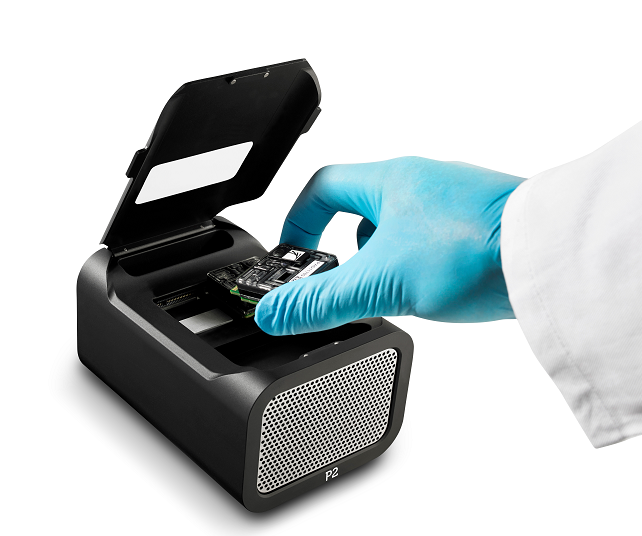

단백질 나노포어: CsgG, α-hemolysin 등 생체 단백질 활용. 이 단백질들은 세포막에 삽입되어 나노미터 크기의 구멍(pore)을 형성하며, 이 구멍을 통해 DNA/RNA 분자가 한 가닥씩 통과할 때 발생하는 미세한 전류 변화를 측정하여 염기서열을 판독합니다. 각 염기(A, T, G, C)는 고유한 크기와 화학적 특성을 가지므로, 포어를 통과할 때 각기 다른 전류 변화 패턴을 만들어냅니다.
단일분자 검출: 한 번에 하나의 DNA 분자 분석
실시간 스트리밍: 시퀀싱과 동시에 데이터 분석
긴 읽기: 이론적으로 무제한 읽기 길이
🚀 Oxford Nanopore 플랫폼 라인업
플랫폼
크기
처리량
주요 용도
특징
MinION
USB 크기
10-30Gb
현장 진단, 교육
휴대성, 저비용
GridION
벤치탑
150Gb
중간 규모 프로젝트
5개 플로우셀 동시
PromethION
대형 시스템
8.5Tb
대규모 게놈 프로젝트
48개 플로우셀 동시
P2 Solo
벤치탑
260Gb
고처리량 연구
최신 고성능 플랫폼

Oxford Nanopore의 고처리량 플랫폼 PromethION P2 Solo
🎯 베이스콜러 기술 발전
🧠 AI 베이스콜러 진화
Guppy: 초기 CNN(Convolutional Neural Network) 기반 베이스콜러. 인접한 전기 신호의 패턴을 이미지처럼 인식하여 염기를 판독했으나, 복잡한 신호 패턴이나 긴 homopolymer 구간에서 오류가 잦았음.
Dorado: 최신 Transformer 모델 기반. Transformer는 문장의 전체 문맥을 파악하는 데 뛰어난 AI 모델로, 이를 전기 신호에 적용하여 훨씬 더 넓은 범위의 신호 전후 관계를 파악. 이로 인해 Homopolymer(동일염기 반복)나 복잡한 변형(메틸화 등)이 포함된 신호의 해석 정확도가 비약적으로 향상됨.
정확도 향상: 85% → 99.3% (Q20+)
속도 개선: 실시간 베이스콜링
⚡ 실시간 분석 기능
Live basecalling: 실시간 염기서열 생성
Adaptive sampling (ReadUntil): 시퀀싱 중인 DNA/RNA 분자의 전기 신호를 실시간으로 분석하여, 관심 영역(on-target)의 분자는 계속 시퀀싱하고, 불필요한 영역(off-target)의 분자는 포어에서 전압을 역전시켜 배출하는 기술입니다. 이는 특별한 하드웨어 변경 없이 소프트웨어적으로 제어됩니다.
Real-time alignment: 즉시 매핑
Selective sequencing: 선택적 DNA 분석 (Adaptive sampling을 통해 구현)